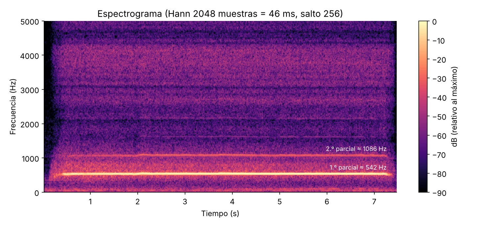
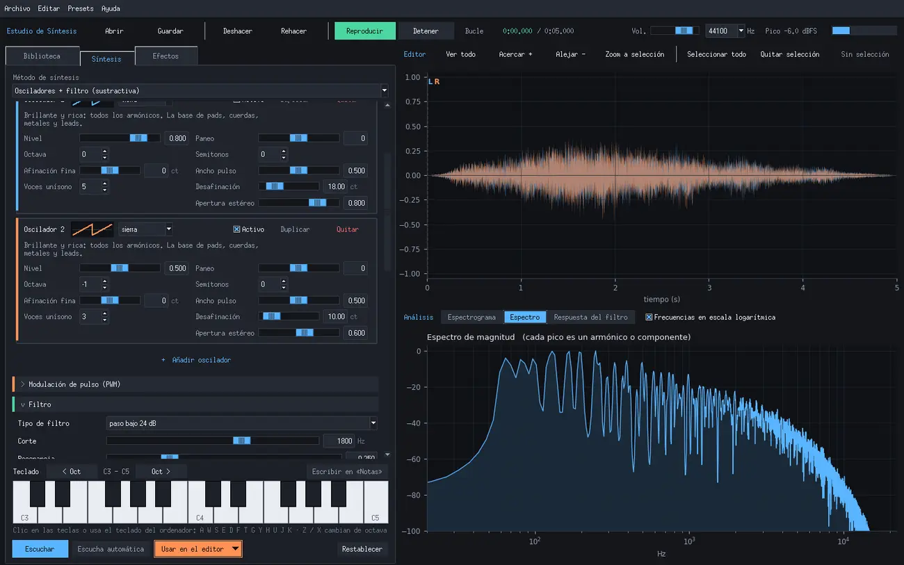

Tutorial: crea tu portafolio y vincúlalo a la orquesta
Cada integrante de la Orquesta de Laptops UC puede tener un blog propio, como este, hecho con el tema Chirpy y publicado gratis en GitHub Pages. Después se muestra dentro del sitio de la orquesta, en…

Tarea 2: Métodos de síntesis
Un silbido hecho con las manos, analizado y reconstruido con dos métodos de síntesis (aditiva y sustractiva) y luego tocado en vivo por el mismo silbido. Esta entrada también está como página propia, con todos los…

Estudio de Síntesis: un programa para crear y procesar sonidos
Estudio de Síntesis es un programa de escritorio, hecho en Python, para crear sonidos con los métodos de síntesis más conocidos, pasarlos por filtros y efectos, y editarlos como en un editor de audio. Lo pensé como un…
MTrackpad: un instrumento para tocar con el trackpad
MTrackpad (musical trackpad) es un instrumento que se toca con el trackpad, el mouse o una pantalla táctil, directamente en el navegador. Un recuadro XY, un eje Z y los gestos que se hacen sobre él controlan un…
Tarea 1: Propuesta de obra para la Orquesta de Laptops UC
Referentes 1) Stanford Laptop Orchestra | Aura (2019) Video en YouTube · Página de la obra en SLOrk Esta obra inicia despacio, con un solo miembro (el cual actúa como guía) moviendo su orbe haciendo unos sonidos…
Samples
Sonidos generados con puredata para la Orquesta de Laptops UC, por sintesis con filtro de bandas. Coro Coros con bajo Coros tres (bp)
MiMu gloves
Al pensar en maneras diferentes de controlar sonido, recorde a la artista Imogen Heap, la cual utiliza los llamados "MiMu gloves" para controlar disitintos parametros al cantar. Video explicativo + demostración (minuto…
Que podemos hacer
Al buscar distintos ejemplos de orquestas de laptops, encontré que la mayoría (al menos las mas conocidas) realizan piezas mas "intelectuales", sensoriales, abstractas. Esto no es un problema, pero si aporta a un…
Entrada nº1
Al revisar la playlist entregada, seleccione los siguientes videos: The PLOrk Drones Esta obra inicia lentamente con un tono constante el cual pareciera estar lejos, pero luego se acerca y mantenie (como si un dron…